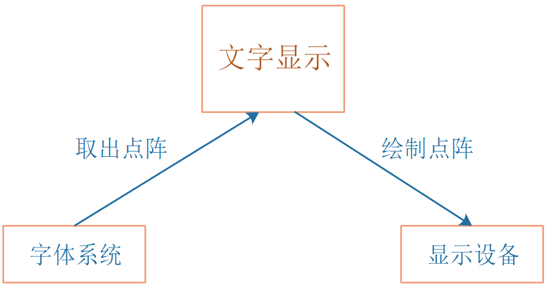
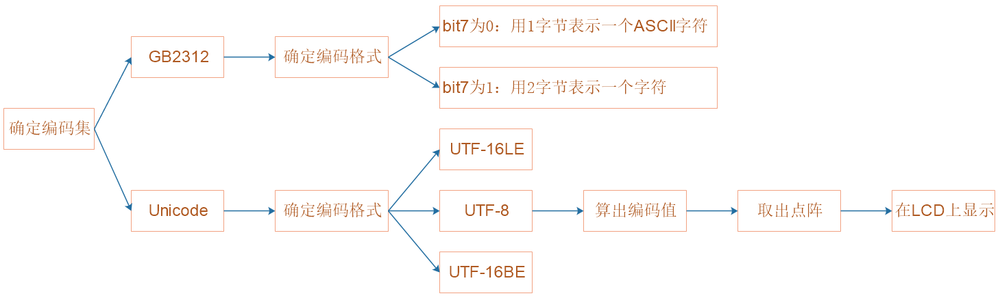

1.字体系统_设计思路与结构体
本节源码：在GIT仓库中
rtos_doc_source\RTOS培训资料\
01_项目1_基于HAL库实现智能家居\
05_项目1_基于HAL库的智能家居\1_项目源码\10_13_font_struct
1.1 点阵字体和矢量字体差别
有点阵字体，有矢量字体，比如：

1.1.1 点阵字体描述
对于普通的点阵字体（8*16），怎么描述它？比如下面的点阵：
用下面的结构体来表示即可：
struct dot_font {
int iWidth;
int iHeigh;
unsigned char *dots; /* 执行一个bufffer, dots[0]对应第1列, dots[1]对应第1列, ... */
};
1.1.2 矢量字体描述
对于矢量字体，每个字体的大小可能不一样，前一个字体会影响下一个字体。
下图是一个矢量字体的例子，图中两个黑点很重要：
右边的黑点：当前字符的原点
右边的黑点：下一个字符的原点
怎么描述一个矢量字体？上图的参数都要记录下来。
1.2 字体位图的数据结构
能否抽象出一个结构体，既能描述点阵字体，也能描述矢量字体？
typedef struct FontBitMap {
int iLeftUpX; /* 位图左上角X坐标 */
int iLeftUpY; /* 位图左上角Y坐标 */
int iWidth; /* 字体宽度 */
int iRows; /* 字体高度 */
int iCurOriginX; /* 原点X坐标 */
int iCurOriginY; /* 原点Y坐标 */
int iNextOriginX; /* 下一个字符原点X坐标 */
int iNextOriginY; /* 下一个字符原点Y坐标 */
unsigned char *pucBuffer; /* 字符点阵 */
}FontBitMap, *PFontBitMap;
1.2.1 程序中原点的确定
不用纠结原点在哪里，这个原点只是对于这个字符来说的，不是对LCD来说的。
看这个图里面，画出了三个原点，
这里认为LCD的原点在左上角，
认为第1个字符A的原点在左下角，换一种表示方法，又认为第2个字符A的原点在左上角。
这有什么关系呢？这只是一些坐标运算而已。
比如我要把字符a显示在LCD的左上角：
字符A的原点在哪里？在LCD坐标系里面，红色原点的坐标就是(0, 15)。
我认为字符a的原点在左上角：
字库中的点阵坐标是相对字体原点的绝对坐标位置。
1.3 字体库的数据结构
对于字库操作，最关键的点在于"获得指定字符"的字库数据。
另外，
点阵字库文件中，每个字符大小是固定的。
矢量字符文字文件中，可以灵活设置字符的大小。
可以抽象出这样的结构体：
//字库结构体
typedef struct FontLib{
//字库类型
char *name;
//字库初始化
int (*FontInit)(struct FontLib * pFontLib);
//获取字体大小
void (*GetFontSize)(int *piWidth,int *piHeigh);
//设置字体大小
int (*SetFontSize)(int iFontSize);
//获取当前dwCode的点阵数据
int (*GetFontBitMap)(unsigned int dwCode,PFontBitMap ptFontBitMap);
//链表
struct FontLib *pNext;
}FontLib,*PFontLib;
1.4 程序层次
以上两个结构体所搭建的程序框架，可以支持以下三种字库

2.字体系统_实现ASCII字库的操作
本节源码：在GIT仓库中
rtos_doc_source\RTOS培训资料\
01_项目1_基于HAL库实现智能家居\
05_项目1_基于HAL库的智能家居\1_项目源码\10_14_font_ascii
2.1 程序层次

2.2 构造FontLib
编写ascii_font.c，构造一个FontLib结构体：
/* 构造一个FontLib */
static FontLib g_ASCIIFontLib = {
"ascii",
NULL,
ASCIIGetFontSize,
NULL,
ASCIIGetFontBitMap,
};
函数ASCIIGetFontSize用来获得字库点阵的宽度、高度，代码如下：
/**********************************************************************
* 函数名称： ASCIIGetFontSize
* 功能描述： 获得ASCII字库中字符点阵的宽、高
* 输入参数： 无
* 输出参数： piWidth-保存宽度
* 输出参数： piHeigh-保存高度
* 返 回 值： 无
* 修改日期 版本号 修改人 修改内容
* -----------------------------------------------
* 2021/10/08 V1.0 韦东山 创建
***********************************************************************/
static void ASCIIGetFontSize(int *piWidth, int *piHeigh) /* 获取字体大小 */
{
if (piWidth)
*piWidth = 8;
if (piHeigh)
*piHeigh = 16;
}
核心函数是ASCIIGetFontBitMap：
/**********************************************************************
* 函数名称： ASCIIGetFontBitMap
* 功能描述： 获得ASCII字库中某个字符的点阵
* 输入参数： dwCode-哪个字符,字符的ASCII码
* 输出参数： ptFontBitMap-用来保存字库点阵
* 返 回 值： 0-成功, -1-失败
* 修改日期 版本号 修改人 修改内容
* -----------------------------------------------
* 2021/10/08 V1.0 韦东山 创建
***********************************************************************/
static int ASCIIGetFontBitMap(unsigned int dwCode, PFontBitMap ptFontBitMap) /* 获取某个字符的字库 */
{
int iWidth = 8;
int iHeigh = 16;
unsigned char *dots = ascii_font[dwCode];
if (!ptFontBitMap)
{
/* 调用GetFontBitMap之前要设置原点X,Y坐标
* 根据它可以算出左上角X,Y坐标
* 根据它可以算出下一个字符的原点X,Y坐标
*/
/* 计算左上角坐标 */
ptFontBitMap->iLeftUpX = ptFontBitMap->iCurOriginX;
ptFontBitMap->iLeftUpY = ptFontBitMap->iCurOriginY - iHeigh + 1;
/* 计算下一个字符的原点坐标 */
ptFontBitMap->iNextOriginX = ptFontBitMap->iCurOriginX + iWidth;
ptFontBitMap->iNextOriginY = ptFontBitMap->iCurOriginY;
/* 设置点阵宽度/高度 */
ptFontBitMap->iWidth = iWidth;
ptFontBitMap->iRows = iHeigh;
/* 如果用户没有提供自己的buffer, 直接返回字库数组里的数据 */
if (!ptFontBitMap->pucBuffer)
ptFontBitMap->pucBuffer = dots;
else /* 如果用户提供了自己的buffer, 复制字库数组里的数据 */
memcpy(ptFontBitMap->pucBuffer, dots, 16);
return 0;
}
return -1;
}
2.3.1 问题1 将"dots"赋值给"pucBuffer"的两种情况
写个代码举例：
pucBuffer在代码中是一个字符指针，指向一段空间。
如果指向的地址不为空，则直接进行重新指向即可。
如果指向的地址为空，则需要在这里重新拷贝数据。
2.3 实现管理层
2.3.1 font_manager.c
底层字库要向上注册FontLib，函数FontLibRegister代码如下：
/**********************************************************************
* 函数名称： FontLibRegister
* 功能描述： 注册一个字库
* 输入参数： ptFontLib-字库
* 输出参数： 无
* 返 回 值： 无
* 修改日期 版本号 修改人 修改内容
* -----------------------------------------------
* 2021/10/09 V1.0 韦东山 创建
***********************************************************************/
void FontLibRegister(PFontLib ptFontLib)
{
ptFontLib->pNext = g_ptFontLibs;
g_ptFontLibs = ptFontLib;
}
所谓注册，就是把底层的FontLib放入上层的链表。
我们还可以根据名字，从链表里把FontLib取出来，函数为__GetFontLib：
/**********************************************************************
* 函数名称： __GetFontLib
* 功能描述： 获得字库
* 输入参数： name-字库的名称
* 输出参数： 无
* 返 回 值： 成功-PFontLib, 失败-NULL
* 修改日期 版本号 修改人 修改内容
* -----------------------------------------------
* 2021/10/09 V1.0 韦东山 创建
***********************************************************************/
PFontLib __GetFontLib(char *name)
{
PFontLib pTmp = g_ptFontLibs;
while (pTmp)
{
if (strcmp(pTmp->name, name) == 0)
return pTmp;
else
pTmp = pTmp->pNext;
}
return NULL;
}
2.3.2 font_system.c
为了让font_manager.c和底层的ascii_font.c不相互调用，引入了font_system.c。
里面有2个函数：
/**********************************************************************
* 函数名称： AddFontLibs
* 功能描述： 注册多个字库
* 输入参数： 无
* 输出参数： 无
* 返 回 值： 无
* 修改日期 版本号 修改人 修改内容
* -----------------------------------------------
* 2021/10/08 V1.0 韦东山 创建
***********************************************************************/
void AddFontLibs(void)
{
AddFontLibASCII();
}
/**********************************************************************
* 函数名称： GetFontLib
* 功能描述： 获得字库
* 输入参数： name-字库的名称
* 输出参数： 无
* 返 回 值： 成功-PFontLib, 失败-NULL
* 修改日期 版本号 修改人 修改内容
* -----------------------------------------------
* 2021/10/09 V1.0 韦东山 创建
***********************************************************************/
PFontLib GetFontLib(char *name)
{
return __GetFontLib(name);
}
3.文字显示_设计思路
本节源码：在GIT仓库中
rtos_doc_source\RTOS培训资料\
01_项目1_基于HAL库实现智能家居\
05_项目1_基于HAL库的智能家居\1_项目源码\10_15_show_text_encoding
3.1 怎么显示一个字符？

3.1.1 编码集/字符集
char *str = "ABC中国";
对于同一个字符串，它们所对应的编码集不一样

对于英文编码集，这个统一编码称为ASCII

对于中文来说，台湾人使用的编码集为Big5、大陆人使用的编码集为GB2312，如果不采用相同的编码集打开文件，就可能会乱码
GB2312编写的文件使用Big5编码方式打开结果如下

但是由于不同的地区所编写的文件都采用不同的编码集比较麻烦，所以提出了UNICODE编码集，所有的字符都有一个唯一的数值，就不用不同区域使用不同的编码集。
3.1.2 Unicode编码集
Unicode编码集：所有的字符都对应唯一的数值，世界上的所有符号在该编码集中有拥有独一无二的编码，对于Unicode的使用查询unicode.org，或者专门的汉字对应表 Unicode 当然是一个很大的集合，现在的规模可以容纳100多万个符号。每个符号的编码都不一样，比如，U+0639表示阿拉伯字母Ain，U+0041表示英语的大写字母A，U+4E25表示汉字“严”。
但是Unicode只规定了符号集，确定了符号的二进制代码，但是没有规定二进制代码如何保存:
由此产生了多种不同的二进制格式来表示Unicode，使用较广的一种方式是UTF-8，它属于Unicode的实现方式之一
3.1.3 UTF-16编码格式（不推荐使用）
一个字符使用两个字节来表示，再引入大字节序和小字节序号。

以小字节序为例，
缺点如下：
一个字节可以表示的东西用两个字节浪费空间
如果缺少一个容易导致全部乱码
3.1.4 UTF-8编码格式
UTF-8编码格式最大的特点是他是一种变长度的编码格式，可以使用1-4个字节来表示一个符号，根据不同的符号而变化字节长度。
UTF-8的编码规则如下：
对于单字节的符号，字节第一位设为0，后面7位为这个符号的Unicode码，因此对于英文字符，UTF-8编码和ASCII编码是相同的，都是1个字节。
对于n字节的符号（n>1）,第一个字节的前n位都设为1，第n+1位设为0，后面字节的前两位一律设置为10。剩下的没有提及的二进制位，全部是这个符号的Uicode码。
Unicode数值范围(16进制) | UTF-8编码方式(二级制) |
|---|
0000 0000-0000 007F | 0xxxxxxx |
0000 0080-0000 07FF | 110xxxxx 10xxxxxx |
0000 0800-0000 FFFF | 1110xxxx 10xxxxxx 10xxxxxx |
0001 0000-0010 FFFF | 11110xxx 10xxxxxx 10xxxxxx 10xxxxxx |
UTF-8的编码解读如下：
对于字符串“ABC中国”，我们虽然知道了各个字符对应的UTF-8格式如下

对于UTF-8，上一个符号中字节数据的丢失对于下一个符号的检测不会产生影响。

3.1.5 GB2312编码格式

3.2 在LCD上绘制

4.文字显示_编程
本节源码：在GIT仓库中
rtos_doc_source\RTOS培训资料\
01_项目1_基于HAL库实现智能家居\
05_项目1_基于HAL库的智能家居\1_项目源码\10_16_show_text
4.1 怎么显示一个字符？
4.1.1 总框架

4.1.2 具体步骤

4.2 编程
看视频：https://www.100ask.net/detail/v_616577e7e4b08b72d7fe515e/3?from=term_6128b5469d408_KtUH9u&type=25&parent_pro_id=
5.文字显示_单元测试
本节源码：在GIT仓库中
rtos_doc_source\RTOS培训资料\
01_项目1_基于HAL库实现智能家居\
05_项目1_基于HAL库的智能家居\1_项目源码\
10_17_show_text_unittest_err
10_18_show_text_unittest_ok
5.1 编写单元测试代码
这涉及3个系统：
代码在text_test.c中，主要代码如下：
/**********************************************************************
* 函数名称： text_test
* 功能描述： 文本系统单元测试函数
* 输入参数： 无
* 输出参数： 无
* 返 回 值： 无
* 修改日期 版本号 修改人 修改内容
* -----------------------------------------------
* 2021/10/13 V1.0 韦东山 创建
***********************************************************************/
void text_test(void)
{
char *str = "www.100ask.net";
PDisplayDevice ptDevice;
char *name = "OLED";
/* 添加字库 */
AddFontLibs();
/* 选择默认字库 */
SetDefaultFontLib("ascii");
/* 初始化默认字库 */
InitDefaultFontLib();
/* 添加显示设备 */
AddDisplayDevices();
/* 获得指定的显示设备 */
ptDevice = GetDisplayDevice(name);
if (!ptDevice)
{
printf("Can not get DisplayDevice %s\r\n", name);
return;
}
/* 初始化设备 */
ptDevice->Init(ptDevice);
/* 清除屏幕 */
memset(ptDevice->FBBase, 0, ptDevice->iSize);
/* 在屏幕上显示文字 */
ShowTextInDisplayDevice(ptDevice, 16, 16, str);
}
5.2 调试、上机
我们做了哪些修改？
可以用比较工具对比一下：10_17_show_text_unittest_err和10_18_show_text_unittest_ok
推荐的比较工具是"Beyond Compare"，下载地址：https://www.beyondcompare.cc/
6. 编程经验分享
① 看源码时是比较容易理解，自己码时总是卡在某些点；就比如把功能拆分成很多函数。
写程序的时候，一碰到很难的地方就用一个函数来实现，这样不会影响到我的思路，不影响到我编程的思路，别人看我的代码时也不会受到影响。
② 如何连写架构设计？
要多看多写多刷题。可以不用全部弄清楚，从上往下 ，碰到什么再抽象什么。
③ 数据类型如何统一？
建立一个type.h，在里面根据机器位数实现类型统一。
④ 不同处理器、不同板卡、不同应用使用到的接口、设备等都可能不一样，如何让系统用同一套程序适配不同的板卡？
同一个程序支持不同的设备只能够通过配置文件来实现了。每个设备都有自己的配置文件。这个配置文件可以保存到设备上，比如内部或者外挂的FLASH，也可以保存到网络服务器上。系统每次都从存储设备中读取整个配置文件来做程序适配。